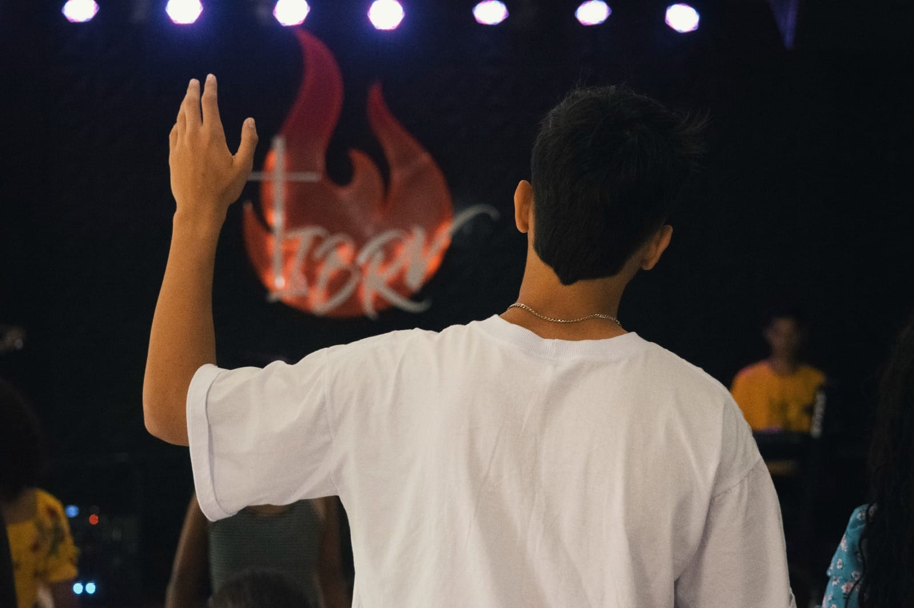
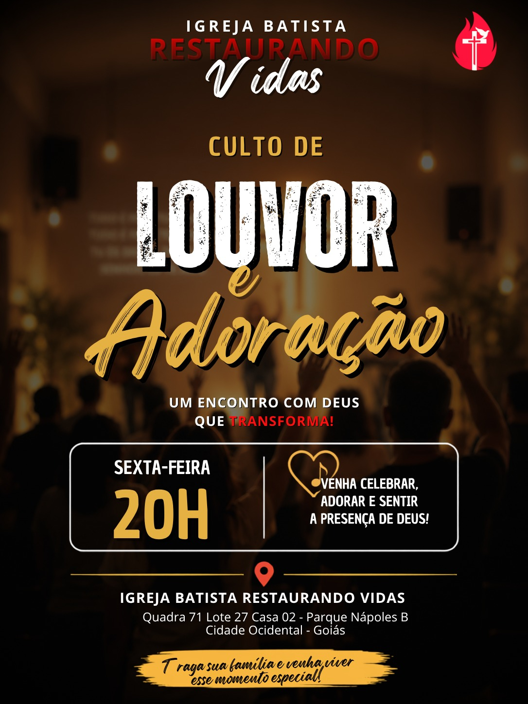
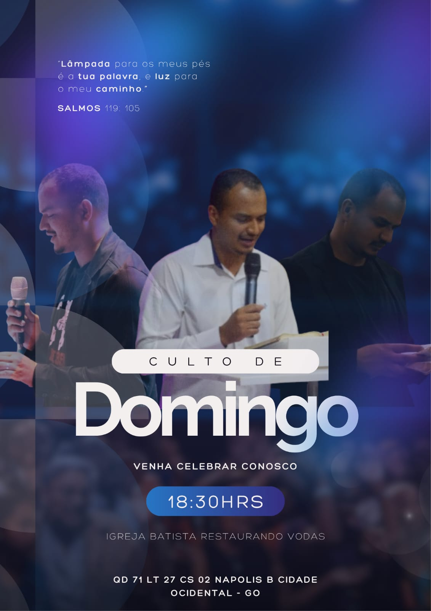
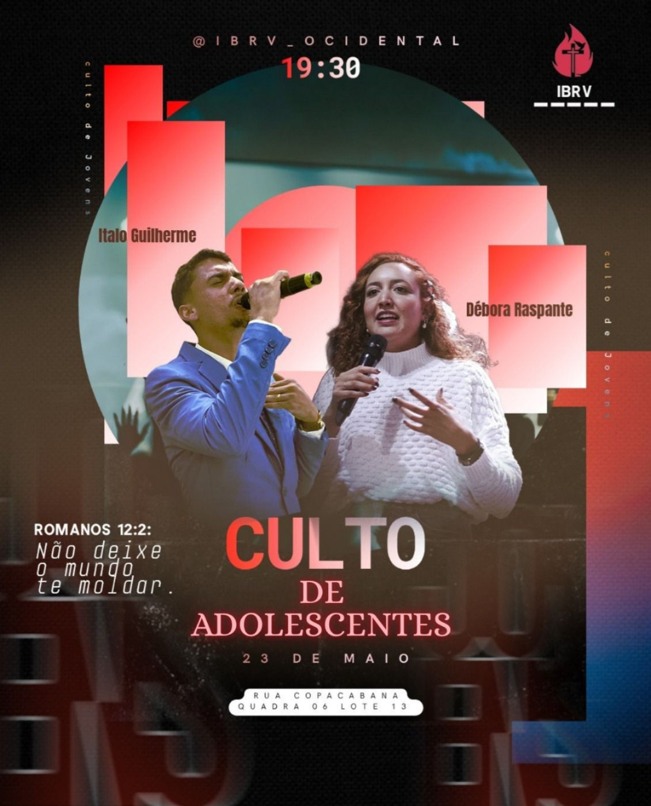
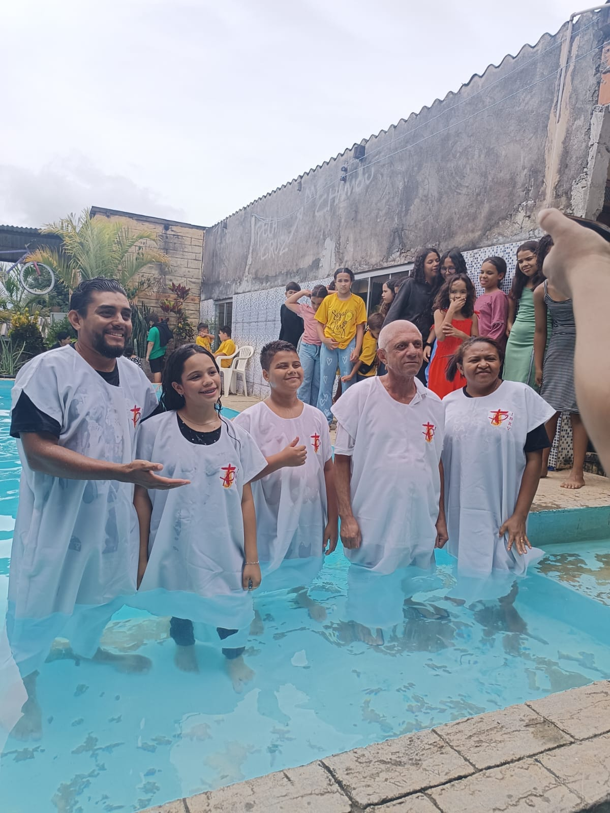

Entre em Contato
Estamos à disposição para receber você e sua família.
Um lugar para pertencer, crescer na fé e viver o amor de Cristo.

A Igreja Batista Restaurando Vidas é uma comunidade de fé comprometida em anunciar o amor de Cristo, acolher pessoas e transformar vidas através da Palavra de Deus.
Nossa missão é servir a Deus e ao próximo, proporcionando um ambiente de comunhão, crescimento espiritual e restauração.
Conheça nossa históriaLevar o Evangelho de Cristo e servir pessoas com amor.
Ser uma igreja que restaura famílias e gera discípulos.
Fé, amor, comunhão e compromisso com Deus.
Áreas de cuidado, comunhão e crescimento espiritual para toda a família.
Ensinando a Palavra de Deus de forma criativa e especial para as crianças.
Jovens conectados com Deus, vivendo propósito e transformação.
Homens fortalecidos pela fé, liderança e comunhão.
Mulheres edificadas através da Palavra e da união.
Fortalecendo famílias através do amor e dos princípios cristãos.
Aprendendo e crescendo no conhecimento da Palavra de Deus.
Momentos especiais de comunhão, adoração e crescimento na presença de Deus.
Todas as Sextas-feiras
20h00
Todos os domingos
18h30
Todos os domingos
08h30
Todas as Terças-feiras
20h00
Acompanhe nossos cultos e lives especiais em tempo real, direto do nosso canal no YouTube.
Nenhuma transmissão agora? Fora do horário de culto, o player pode mostrar nosso vídeo mais recente.
Ver canal completo no YouTubeConfira nossa programação e participe dos momentos especiais da nossa igreja.



Momentos especiais registrados na nossa igreja.

Seja bem-vindo à Igreja Batista Restaurando Vidas. Nossa missão é anunciar o amor de Cristo, cuidar de pessoas e ajudar cada vida a encontrar propósito através da Palavra de Deus.
Cremos que a igreja é uma família, um lugar de acolhimento, comunhão e transformação.
Venha nos conhecerEncontre uma de nossas unidades e venha participar conosco.
Igreja Batista Restaurando Vidas
Rua Copacabana Quadra 06 Lote 13 - Colina Verde
Cidade Ocidental - Goiás
Igreja Batista Restaurando Vidas
Quadra 71 Lote 27 Casa 02 - Parque Nápoles B
Cidade Ocidental - Goiás
Estamos à disposição para receber você e sua família.